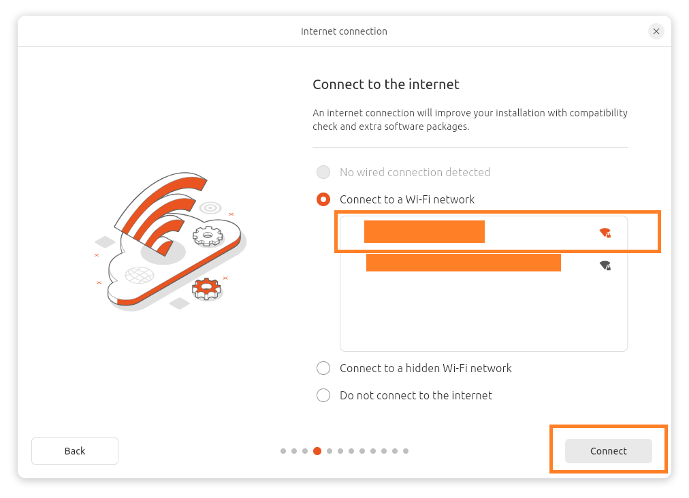
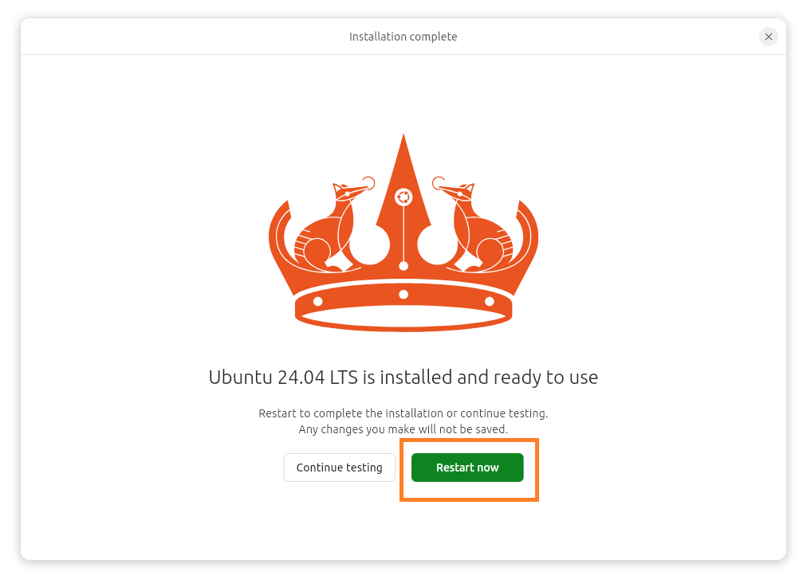
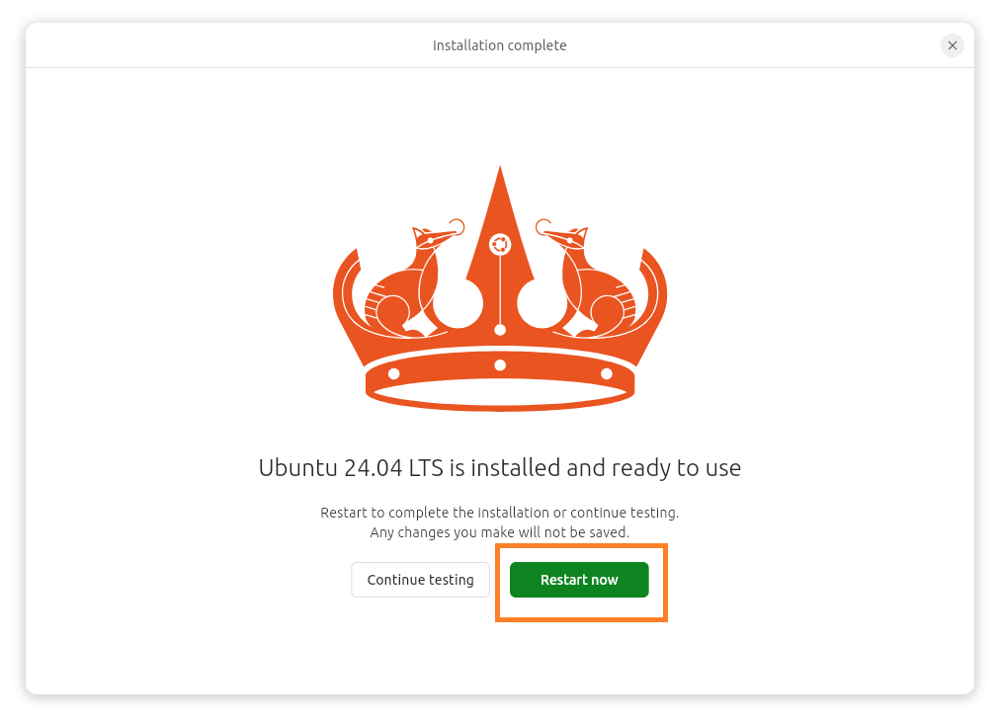

How to Dual Boot Ubuntu
Section Breakdown:
- Boot from USB
- Getting the Installer Updated
- Setting up your Dual Boot
- Start Ubuntu Installation
- Reference Getting the Installer Ready
- Ubuntu Interactive Installation
- Selection Dual-Boot
- Setting up a user
- Setting the time zone
- Installing your settings
- Post Installation
- Final Steps
- GRUB Boot Loader
- QuickLinks
Boot from USB
- Insert the bootable USB drive into the computer.
- Restart the computer and boot from the USB drive.
- Select Try or Install Ubuntu from the GRUB menu.
Getting the Installer Updated:
Step 1: Update Ubuntu Installation
- You will get a Preparing Ubuntu Page.
- Choose Your language English then Click Next.
- Click Next.
- Select your Keyboard layout English (US) then Click Next.


Step 2: Setting up WiFi for Installer
- Connect to the Internet Select Connect to a Wi-Fi network then Click Next.
- Select your WiFi Network then Click Next. 
- You will get a Authentication required request, Fill out your password to your Router.
- You will get a Check-Mark next to your WiFi selection. Then Click Next.
- Click Update Now.
- You will see a downloading window.
- Click the Close Installer.


Setting up your Dual-Boot
Step 1: Start Ubuntu Installation
- Click on either Installers from the Desktop or Taskbar.
Step 2: Reference Getting the Installer Ready
- Click Next.
Step 3: Ubuntu Interactive Installation
- Click Interactive installation and then Click Next.
- Select Extended selection and then Click Next.
- Select Install third-party software for graphics and Wi-Fi hardware and Download and install support for additional media formats and then Click Next.
Step 4: Selection Dual-Boot
- Select Install Ubuntu alongside Windows 11 and then Click Next.
- Click on the drop down for Select partition and make sure to Select the 1.0TB Windows harddrive you can change the size of the harddrive to what you think you will need. (500GB) will split the harddrive in half. Then Click Next.

Step 5: Setting up a user
- Fill out the form with the user information you want and provide a password for that user. Then Click Next.
Step 6: Setting the time zone
- Select the time zone and then Click Next.
Step 7: Installing your settings
- Click Install. If you think you missed a step you can always Click the Back button.
Step 11: Post Installation
- The next screen shows the installation and here you will wait till you get the Restart now Screen.
 

Step 12: Final Steps
- You will get a screen to let you know to remove the USB Drive once the drive has been removed you can press the Enter key.
Step 13: GRUB Boot Loader
- Once the computer has restarted you should have a screen like this where you can select between Windows 11 or ubuntu using your arrow keys. Select the Operating system and Press Enter.
Congratulations! You have successfully set up a dual-boot system with Ubuntu and Windows 11.